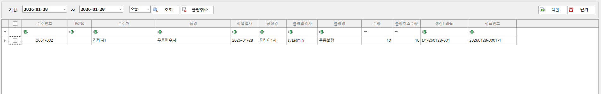
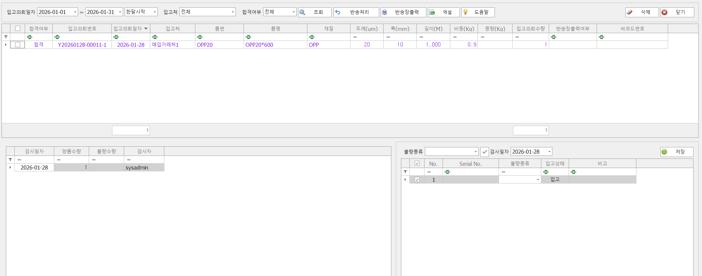
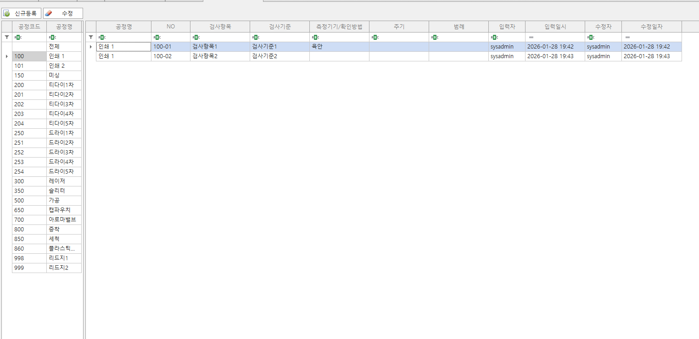

품질 관리
검사 기준과 불량 분석을 표준화해 품질 리스크를 줄이고 고객 신뢰도를 높입니다.
품질 관리 화면

제품검사
- 제품별 검사 기준과 샘플링 규칙을 관리할 수 있습니다.
- 생산 완료된 제품에 대한 검사를 진행하여 불량을 관리할 수 있습니다.

공정불량취소
- 생산 시 발생한 불량정보를 취소 할 수 있습니다.

수입검사(원단)
- 원단이 검사품일 경우 수입검사를 진행할 수 있습니다.
- 검사 내용을 수량, 색상, 검사결과로 관리할 수 있습니다.

검사항목 등록
- 공정별 검사항목을 등록 관리할 수 있습니다.